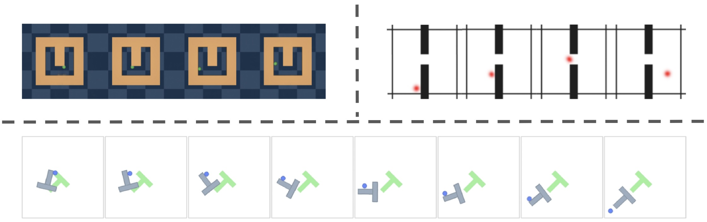
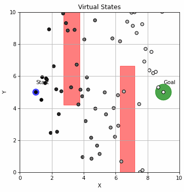
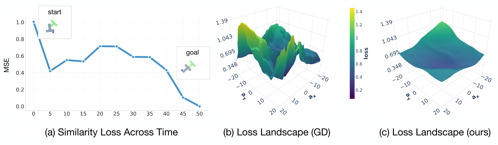
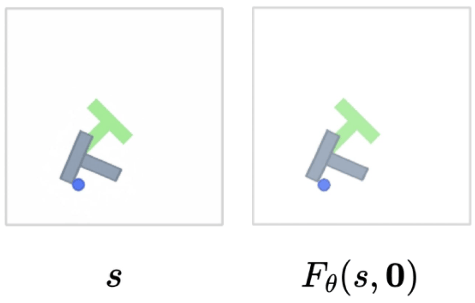
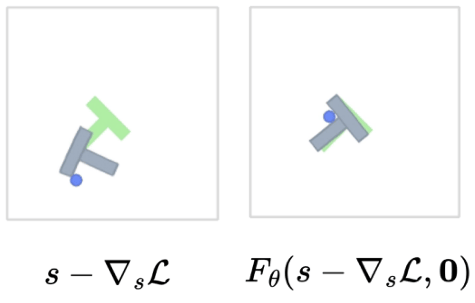
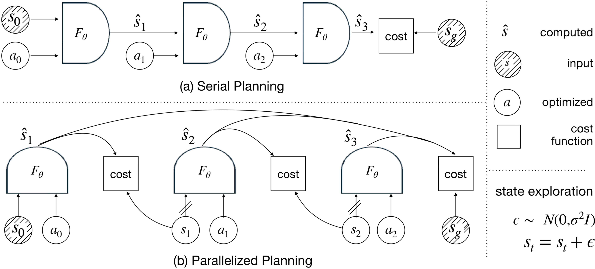

tl;dr: A new gradient-based planner for world models, incorporating a lifted-states approach, stochastic optimization, and a reshaped gradient structure for a smoother optimization landscape.

Virtual states learned through planning. All examples are instantiations of our planner at horizon 50 in the Point-Maze, Wall-Single, and Push-T environments. All world models are over visual input. Regardless of the dynamics constraint relaxation and state noising, directly optimized states find realistic, non-greedy paths towards the goal.

Exploration through state noising and a relaxed dynamics loss in a synthetic navigation environment (state-based). State-based exploration allows for more stable exploration around multiple greedy minima.
Abstract
World models simulate environment dynamics from raw sensory inputs like video. However, using them for planning can be challenging due to the vast and unstructured search space. We propose a robust and highly parallelizable planner that leverages the differentiability of the learned world model for efficient optimization, solving long-horizon control tasks from visual input. Our method treats states as optimization variables ("virtual states") with soft dynamics constraints, enabling parallel computation and easier optimization. To facilitate exploration and avoid local optima, we introduce stochasticity into the states. To mitigate sensitive gradients through high-dimensional vision-based world models, we modify the gradient structure to descend towards valid plans while only requiring action-input gradients. Our planner, which we call GRASP (Gradient RelAxed Stochastic Planner), can be viewed as a stochastic version of a non-condensed or collocation-based optimal controller. We provide theoretical justification and experiments on video-based world models, where our resulting planner outperforms existing planning algorithms like the cross-entropy method (CEM) and vanilla gradient-based optimization (GD) on long-horizon experiments, both in success rate and time to convergence.
Planning with world models is deceptively hard
We assume a learned world model $F_\theta$ predicts the next latent state:
$$s_{t+1} = F_\theta(s_t, a_t), \qquad a_t \in \mathbb{R}^k.$$
Given $s_0$ and a goal $g$, the standard optimization-based planner chooses actions $\mathbf{a}=(a_0,\dots,a_{T-1})$ by rolling out the model and minimizing terminal error:
$$\min_{\mathbf{a}} \;\;\big|s_T(\mathbf{a}) - g\big|_2^2, \quad \text{where } s_T(\mathbf{a}) = F_\theta^T(s_0,\mathbf{a}).$$
This looks simple, but it creates a deep computation graph (a $T$-step composition of $F_\theta$), which is both expensive and often poorly conditioned. The loss landscape can be highly non-greedy: successful plans may need to move away from the goal before moving toward it.

Planning is non-greedy and the loss can be jagged. (a) Successful trajectories can temporarily increase distance to the goal. (b) Standard rollout losses can be sharp and brittle. (c) Our objective smooths the landscape during exploration.
Lifting planning into virtual states to parallelize and stabilize
Instead of forcing a serial rollout during optimization, we introduce intermediate virtual states $\mathbf{s}=(s_1,\dots,s_{T-1})$ and enforce dynamics only through pairwise consistency:
$$\min_{\mathbf{s},\mathbf{a}} \;\; \sum_{t=0}^{T-1} \big|F_\theta(s_t,a_t)-s_{t+1}\big|_2^2, \quad \text{with } s_0\text{ fixed and } s_T=g.$$
This "lifted" view has a big practical benefit:
- All model evaluations $F_\theta(s_t,a_t)$ are parallel across time. No $T$-step serial rollout is needed just to compute a training signal.
But naïvely optimizing states introduces two common failure modes:
- Local minima in state space (e.g., "phantom" trajectories that cut through walls).
- Brittle state gradients in high-dimensional latent spaces (the optimizer can exploit tiny off-manifold perturbations in $s_t$).

(a) Expected behavior

(b) Adversarial example
Sensitivity of state gradient structure. Examples of three states far away from the goal on the right (either in-distribution or out-of-distribution), such that taking a small step along the gradient $s' = s - \epsilon \nabla_s \mathcal{L}(s), \mathcal{L}(s) = \| F_\theta(s, a=\mathbf{0}) - g\|_2^2$, leads to a nearby state $s'$ that solves the planning problem in a single step: $F_\theta(s', \mathbf{0}) = g$. Thus, optimizing states directly through the world model $F_\theta$ can be quite challenging.
That leads to the two ingredients that make the method work.
Ingredient 1: Exploration by injecting noise into the virtual states
Even with a smoother objective, planning remains nonconvex. We add lightweight exploration by noising the state iterates during optimization:
- Update $\mathbf{a}$ by gradient descent on $\mathcal{L}$,
- Update $\mathbf{s}$ by a descent-like step plus Gaussian noise.
A simple version is:
$$s_t \leftarrow s_t - \eta_s \,\partial_{s_t}\mathcal{L} \;+\; \sigma_{\text{state}}\xi,\qquad a_t \leftarrow a_t - \eta_a\nabla_{a_t}\mathcal{L}, \quad \xi\sim\mathcal{N}(0,I).$$
In practice, this helps the planner "hop" out of bad basins in the lifted space, while actions remain guided by stable gradients.
Ingredient 2: Cut brittle state-input gradients, keep action gradients
Directly backpropagating through the state input $s_t$ can be adversarial: the optimizer can "cheat" by nudging $s_t$ off-manifold so that the model outputs whatever is convenient. To prevent this, we stop gradients through the state inputs to the world model.
Let $\bar{s}_t$ denote a stop-gradient copy of $s_t$ (same value, no gradient). We use:
$$\mathcal{L}_{\text{dyn}}^{\text{sg}}(\mathbf{s},\mathbf{a}) = \sum_{t=0}^{T-1}\big|F_\theta(\bar{s}_t,a_t)-s_{t+1}\big|_2^2.$$
Now:
- $a_t$ still gets a clean gradient signal through $F_\theta(\bar{s}_t,a_t)$,
- but we avoid optimizing $s_t$ via fragile $\nabla_{s}F_\theta$ directions.
Dense goal shaping
If we only enforce pairwise consistency, the optimization can drift toward "matching itself" rather than progressing toward $g$. So we add a simple one-step-to-goal shaping term:
$$\mathcal{L}_{\text{goal}}^{\text{sg}}(\mathbf{s},\mathbf{a}) = \sum_{t=0}^{T-1}\big|F_\theta(\bar{s}_t,a_t)-g\big|_2^2.$$
Final objective (two terms, one knob):
$$\mathcal{L}(\mathbf{s},\mathbf{a}) = \mathcal{L}_{\text{dyn}}^{\text{sg}}(\mathbf{s},\mathbf{a}) + \gamma \,\mathcal{L}_{\text{goal}}^{\text{sg}}(\mathbf{s},\mathbf{a}).$$
Intuition:
- Cutting state gradients leads to smoother state optimization and removal of state adversarial examples.
- Goal term makes each action step push predicted next-state toward the goal.
Periodic "sync": briefly switch back to true rollout gradients for refinement
The lifted, grad-cut objective is great for fast parallel exploration, but it's still an approximation of the original serial rollout objective. So every $K_{\text{sync}}$ iterations we "sync":
- Roll out from $s_0$ using the current actions $\mathbf{a}$ (a standard serial rollout).
- Take a few small gradient steps on the original terminal loss:
$$\mathbf{a} \leftarrow \mathbf{a} - \eta_{\text{sync}}\nabla_{\mathbf{a}}\big|s_T(\mathbf{a})-g\big|_2^2.$$
Intuition:
- The parallel lifted phase explores a smoother landscape, while a few steps of full GD allows for the benefits of both the smooth landspace of the lifted dynamics optimization and the sharpness of the full GD landscape.
Putting it together
Each optimization loop alternates between:
- Parallel lifted updates on $(\mathbf{s},\mathbf{a})$ using $\mathcal{L}$ (grad-cut on state inputs + dense goal shaping + state noise)
- Occasional rollout sync updating only $\mathbf{a}$ with full backprop through time
This gives a planner that is:
- parallelizable during exploration,
- robust to brittle state gradients,
- and still grounded by periodic true rollout refinement.

Serial rollout vs. our lifted planning. (a) Standard planners require a $T$-step rollout before getting a learning signal. (b) We optimize virtual states directly with pairwise consistency, enabling parallel model evaluations; we periodically sync with a short serial rollout for refinement.
Minimal pseudocode
- Initialize actions $\mathbf{a}$ and virtual states $\mathbf{s}$ (with $s_0$ fixed, $s_T=g$).
- Repeat for $k=1..K$:
- Compute $\mathcal{L}(\mathbf{s},\mathbf{a})$.
- Gradient step on actions: $a_t \leftarrow a_t - \eta_a \nabla_{a_t}\mathcal{L}$.
- State step + noise: $s_t \leftarrow s_t - \eta_s \nabla_{s_t}\mathcal{L} + \sigma_{\text{state}}\xi$.
- Every $K_{\text{sync}}$ steps: roll out from $s_0$ and do a few small steps on $|s_T(\mathbf{a})-g|^2$.
Citation
@article{psenka2026grasp,
title={Parallel Stochastic Gradient-Based Planning for World Models},
author={Michael Psenka and Michael Rabbat and Aditi Krishnapriyan and Yann LeCun and Amir Bar},
year={2026},
eprint={2602.00475},
archivePrefix={arXiv},
primaryClass={cs.LG},
url={https://arxiv.org/abs/2602.00475},
}